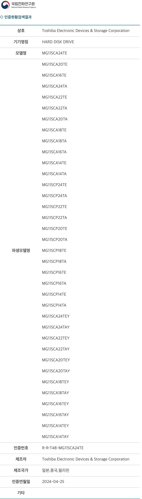

Published in Archive4월 26, 2024Toshiba MG11SCA24T 출처MG10의 후속인 MG11 시리즈로 보인다. 용량은 14TB ~ 24TB로 예상되고 상세 모델명의 유추는 MG10의 모델명을 참고하면 쉬울 듯하다.이제 Seagate, Toshiba, Western Digital 모두가 20TB가 넘는 HDD 모델을 보유하게 된다.